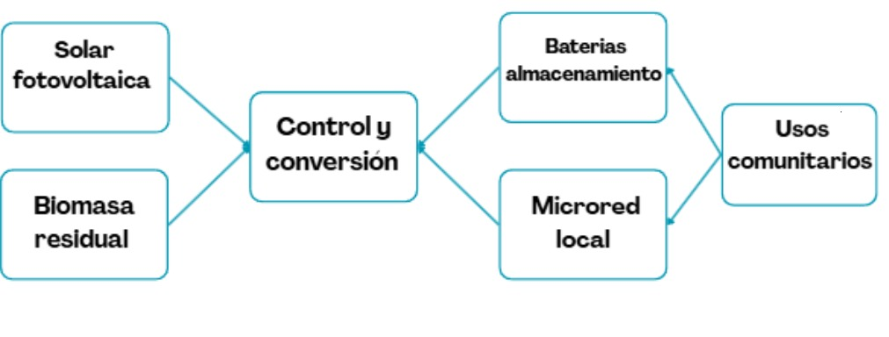
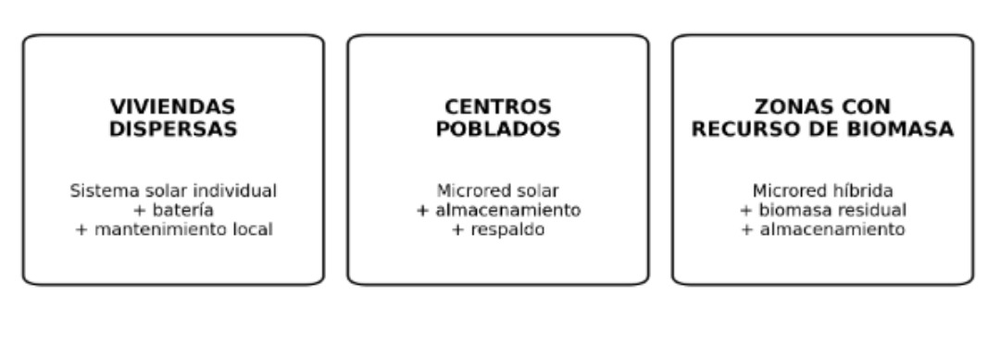
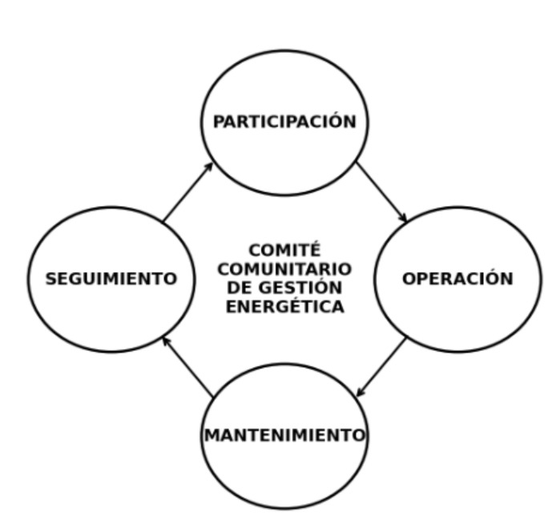

- Avilan Trujillo, K., & Aleisy Gonzalez, F. (2019). Estimación del consumo potencial de energía eléctrica mediante el uso de un modelo matemático para el departamento de Vichada durante el periodo 2019-2039. Universidad de los Llanos.
- Colmenares-Quintero, R. F., Latorre-Noguera, L. F., Rojas, N., Kolmsee, K., Stansfield, K. E., & Colmenares-Quintero, J. C. (2021). Computational framework for the selection of energy solutions in indigenous communities in Colombia: Kanalitojo case study. Cogent Engineering, 8(1), Article 1926406. https://doi.org/10.1080/23311916.2021.1926406
- Diario La Libertad. (2021, 12 de noviembre). Puerto Carreño ya no dependerá más de la energía de Venezuela ni del estado de ánimo del dictador: Duque. https://diariolalibertad.com/2021/11/12/puerto-carreno-ya-no-dependera-mas-de-la-energia-de-venezuela-ni-del-estado-de-animo-del-dictador-duque/
- El País. (2025a, 2 de enero). Alcalde de Puerto Carreño, Vichada, alertó los problemas que pudo dejar el apagón en ese municipio: "Habrá protestas". https://www.elpais.com.co/colombia/alcalde-de-puerto-carreno-vichada-alerto-los-problemas-que-pudo-dejar-el-apagon-en-ese-municipio-habra-protestas-0311.html
- El País. (2025b, 2 de enero). Presidente Petro pide a empresas de servicios públicos transitar a energías limpias tras crisis en Puerto Carreño. https://www.elpais.com.co/colombia/presidente-petro-pide-a-empresas-de-servicios-publicos-transitar-a-energias-limpias-tras-crisis-en-puerto-carreno-0352.html
- Gualtero Rodriguez, K. J. (2019). Sostenibilidad de la producción de energía a partir de la biomasa forestal en la Orinoquía. Creative Commons.
- Guzman, M. (2018). ¿Energías renovables en la Orinoquía? Universidad de los Andes.
- Instituto de Planificación y Promoción de Soluciones Energéticas para las Zonas No Interconectadas. (2024). 903 hogares de los departamentos de Vaupés, Casanare y Vichada tendrán energía renovable por primera vez. IPSE.
- La FM Colombia. (2025, 3 de enero). Gerente de ElectroVichada dio las causas del gran apagón en Puerto Carreño [Archivo de video]. YouTube. https://www.youtube.com/watch?v=EuCXDuroRIO
- La República. (2023, 11 de septiembre). El Caribe es la clave para la ruta de transición energética por su potencial para generar. https://www.larepublica.co/economia/el-caribe-es-la-ficha-clave-para-la-ruta-de-transicion-energetica-3700502
- Martinez, G. L., Arboleda, C. I. B., Lora, E. E. S., Santiago, Y. C., & del Olmo, O. A. (2025). Techno-economic evaluation of converting biomass to electricity in isolated areas of Colombia. Biofuels, Bioproducts and Biorefining, 19(4), 1059–1074. https://doi.org/10.1002/bbb.2768
- Presidencia de la República Colombia. (2021, 12 de noviembre). Puerto Carreño logró la independencia energética con planta de biomasa forestal [Archivo de video]. YouTube. https://www.youtube.com/watch?v=eqs4oFbGcGY
- Roa, D., & Gomez Acuña, D. M. (2019). Implementación de proyectos de generación eléctrica a partir de fuentes no convencionales de energía renovable en un municipio de Colombia perteneciente a las Zonas No Interconectadas.
- Rojas Reina, C. J., Alonso-Gomez, L., & Cortes Santos, A. (2026). Biogas potential of different unconventional substrates from the Orinoquía region, Colombia, for anaerobic co-digestion with swine manure. Biomass Conversion & Biorefinery, 16(15), 1. https://doi.org/10.1007/s13399-026-07221-8
- RTVC Noticias. (2021, 13 de noviembre). Inauguran planta de generación de biomasa forestal en Puerto Carreño. https://www.rtvcnoticias.com/colombia/inauguran-planta-de-generacion-de-biomasa-forestal-en-puerto-carreno
- Semana. (2025, 2 de enero). Apagón en Puerto Carreño por millonaria deuda del Gobierno Petro: no giran recursos desde abril de 2024. https://www.semana.com/nacion/regionales/articulo/apagon-en-puerto-carreno-por-millonaria-deuda-del-gobierno-petro-no-giran-recursos-desde-abril-de-2024/202555/
- Superintendencia de Servicios Públicos Domiciliarios. (2023). Informe sectorial de la prestación del servicio de energía eléctrica 2023 para Zonas No Interconectadas. SSPD.
- Unidad de Planeación Minero Energética. (2015). Guía para la elaboración de un Plan de Energización Rural Sostenible: La energía como un medio para el desarrollo productivo rural. UPME.
- Universidad Autónoma de Occidente. (s.f.). Manual de radiación solar en Colombia [Documento técnico]. Red UAO. https://red.uao.edu.co/
- Universidad de los Andes. (2016, 23 de febrero). La Orinoquia: un territorio biodiverso que demanda un desarrollo sostenible. https://www.uniandes.edu.co/es/noticias/ambiente-y-sostenibilidad/la-orinoquia-un-territorio-biodiverso-que-demanda-un-desarrollo-sostenible
- Universidad Nacional Abierta y a Distancia. (s.f.). Radiación solar en Colombia [Documento académico]. Repositorio Institucional UNAD. https://repository.unad.edu.co/
Modelo Energético Descentralizado y Sostenible para el Departamento del Vichada
Documento del curso Problemas Energéticos (2026).
1. Presentación del Proyecto
Título del Proyecto: Modelo Energético Descentralizado y Sostenible para el Departamento del Vichada.
Autores: Juan Guillermo Sánchez Arango, Adrian Stivenson Becerra Ruiz, Mariana Muñoz Betancur, Sebastián Moreno Parra.
Institución: Universidad Pontificia Bolivariana — Maestría en Ciencias Naturales y Matemáticas.
Curso/Contexto: Problemas Energéticos (2026).
Resumen Ejecutivo: Propuesta de electrificación mediante un enfoque híbrido descentralizado (solar fotovoltaica, biomasa residual y almacenamiento en baterías) integrado a microredes y sistemas aislados, adaptado a la dispersión poblacional del Vichada.
Modelo energético híbrido descentralizado.

2. Justificación
La formulación de un modelo energético descentralizado y sostenible para el departamento del Vichada se justifica por la necesidad de mejorar el acceso, la continuidad y la calidad del servicio eléctrico en comunidades rurales y territorios pertenecientes a las Zonas No Interconectadas. En estas zonas, la prestación del servicio presenta condiciones técnicas, comerciales y operativas particulares, relacionadas con el aislamiento geográfico, la dispersión poblacional y la dependencia de sistemas locales de generación (Superintendencia de Servicios Públicos Domiciliarios, 2023).
Debido a las grandes distancias entre asentamientos y a la baja densidad de carga, la extensión de la red convencional no necesariamente constituye la alternativa más conveniente para todas las comunidades del Vichada. En consecuencia, se requiere un modelo flexible que diferencie entre viviendas dispersas, centros poblados y localidades susceptibles de interconexión. Los Planes de Energización Rural Sostenible señalan que la planeación energética debe sustentarse en información socioeconómica, territorial y energética, así como en la identificación de iniciativas que relacionen el acceso a la energía con el desarrollo de las regiones rurales.
En este contexto, la integración de energía solar fotovoltaica, biomasa residual y almacenamiento en baterías representa una alternativa pertinente para ser evaluada, aunque su configuración no deberá aplicarse uniformemente en todo el departamento. Los sistemas solares individuales pueden resultar apropiados para viviendas altamente dispersas, mientras que las microredes híbridas pueden responder mejor a centros poblados con demandas residenciales, institucionales y productivas. La incorporación de biomasa deberá condicionarse a la existencia comprobada de residuos suficientes, sostenibles y cercanos, evitando asumir su disponibilidad sin una caracterización territorial previa.
La propuesta también se justifica por el potencial de la energía para fortalecer actividades educativas, sanitarias, comunicativas y productivas. El enfoque de los Planes de Energización Rural Sostenible vincula los proyectos energéticos con iniciativas productivas que generen bienes, servicios e ingresos para las comunidades, de manera que la energía actúe como un medio para el desarrollo territorial y no solamente como un servicio de consumo doméstico (UPME, 2015). Por esta razón, el diagnóstico deberá identificar tanto la demanda residencial como las necesidades de escuelas, puestos de salud, sistemas de abastecimiento de agua y actividades económicas rurales.
Los antecedentes recientes confirman la pertinencia de continuar evaluando soluciones renovables adaptadas al Vichada. En 2024, el Instituto de Planificación y Promoción de Soluciones Energéticas para las Zonas No Interconectadas anunció proyectos con soluciones fotovoltaicas individuales para hogares de Santa Rosalía y La Primavera, acompañados por procesos de formación comunitaria, uso racional de la energía y fortalecimiento organizativo (Instituto de Planificación y Promoción de Soluciones Energéticas para las Zonas No Interconectadas [IPSE], 2024a, 2024b). Estos antecedentes muestran que la sostenibilidad de una intervención energética no depende únicamente de la instalación de equipos, sino también de la apropiación comunitaria, el mantenimiento, la capacitación y la existencia de responsabilidades institucionales definidas.
En síntesis, el proyecto se justifica porque propone atender las brechas energéticas del Vichada mediante un modelo descentralizado, flexible y territorialmente diferenciado. Su pertinencia radica en combinar fuentes renovables, almacenamiento, planificación de la demanda, participación comunitaria y usos productivos de la energía. No obstante, la selección definitiva de cada configuración tecnológica deberá derivarse de estudios técnicos, económicos, sociales y ambientales que permitan determinar cuál alternativa ofrece mayor continuidad, viabilidad financiera y sostenibilidad durante su ciclo de vida.
3. Planteamiento de la Necesidad y Descripción del Problema
Contexto Territorial y Energético:
El Vichada, ubicado en la Orinoquía colombiana, es el segundo departamento más extenso del país, con aproximadamente 100.242 km² que representan cerca del 9% del territorio nacional. Su relieve es predominantemente plano, aunque con algunas ondulaciones . Según el censo de 2018, contaba con 76.642 habitantes; sin embargo, las proyecciones para 2026 estiman entre 127.000 y 130.000 personas, lo que equivale a una densidad aproximada de 1,13 habitantes por km². Esta cifra lo posiciona como uno de los territorios menos densamente poblados no solo de Colombia, sino de América Latina, evidenciando una marcada dispersión rural.
A pesar de su enorme extensión, el Vichada es también uno de los departamentos con menor número de municipios en el país: cuenta únicamente con cuatro, frente a los 1.103 que existen en toda Colombia. Estos son:
Puerto Carreño: capital departamental, localizada en el extremo nororiental, en la confluencia de los ríos Meta y Orinoco, en la frontera con Venezuela. Durante años, su suministro eléctrico dependió de una línea de interconexión transfronteriza proveniente del estado venezolano de Bolívar (Apure). Tras el deterioro de esa infraestructura y el agravamiento de las tensiones bilaterales, la ciudad pasó a depender casi por completo de generación interna aislada.
Cumaribo: el municipio más extenso de Colombia. Concentra una alta proporción de resguardos indígenas y amplias zonas aisladas. Desde 2024 cuenta con la central híbrida no interconectada más grande del país. Su desarrollo urbano es limitado, y la presencia de numerosos resguardos y refugios naturales reduce la demanda energética, lo que permite considerarlo, con ciertos matices, como un municipio energéticamente sostenible; no obstante, esa sostenibilidad obedece más a la ausencia de infraestructura y a la baja densidad que a una abundancia real de energía.
La Primavera: situado al noroccidente, sobre la franja del río Meta. Se destaca por su actividad agropecuaria y forestal. Desde 2023 forma parte del Sistema Interconectado Nacional (SIN), aunque dicha conexión aplica principalmente a sectores específicos, como su casco urbano.
Santa Rosalía: el municipio más pequeño del departamento en extensión y población. También se ubica en la ribera del río Meta y es uno de los más cercanos al interior del país, lo que facilitó su incorporación al Sistema Interconectado Nacional (SIN) desde 2023, aunque, al igual que La Primavera, solo en sectores particulares como su casco urbano.
Esta descripción convierte a Puerto Carreño en un caso especialmente singular: a pesar de ser la capital, de estar rodeada de ríos navegables sobre todo durante la temporada de lluvias, entre abril y octubre y de concentrar la mayor proporción de población, es el único municipio del departamento que enfrenta un problema estructural desde el punto de vista energético, en especial en su casco urbano. A esto se suma una problemática común en las zonas rurales, no solo de Puerto Carreño sino de los cuatro municipios del departamento.
Actualización del contexto (2026)
En junio de 2026, el IPSE informó avances para la reactivación de la interconexión eléctrica entre Colombia y Venezuela desde el Vichada y anunció proyectos que incluyen la Planta Solar El Merey de 5 MW y nuevas soluciones fotovoltaicas rurales. Este escenario no elimina la pertinencia del modelo descentralizado; refuerza la necesidad de combinar soluciones interconectadas, microredes y sistemas aislados según las condiciones específicas de cada comunidad. Por ello, la propuesta debe entenderse como un modelo territorial flexible y no como una sustitución automática de la interconexión convencional.

Desafío Principal:
En una región tan extensa y con población tan dispersa, extender redes convencionales para cubrir usuarios alejados entre sí implica que cada kilómetro de línea beneficie a muy pocos usuarios, elevando los costos unitarios de inversión y mantenimiento hasta niveles comercialmente inviables. En Puerto Carreño, este desafío adquiere matices particulares: aunque es la capital y concentra la mayor proporción de población del departamento, su carácter de "concentración" es relativo, pues está segmentada por ríos y extensas sabanas, y su centro urbano carece de la densidad de carga suficiente para sostener económicamente una expansión de red hacia los asentamientos periféricos y rurales.
Costos logísticos no convencionales difíciles de incorporar en los marcos de evaluación habituales: En regiones como el Vichada, el transporte de materiales frecuentemente depende de embarcaciones fluviales, aeronaves pequeñas u otros medios no convencionales, cuyas tarifas carecen de referencias de mercado formales y cotizaciones estandarizadas. Esto genera desviaciones sistemáticas entre los costos logísticos presupuestados y los costos reales de ejecución, debilitando aún más la viabilidad financiera de los proyectos de extensión de red. Puerto Carreño, si bien es accesible por vía aérea y fluvial, presenta condiciones de transitabilidad que varían drásticamente entre la temporada de lluvias (abril-octubre) y la temporada seca, lo que introduce una imprevisibilidad logística que se traduce en sobrecostos ocultos difíciles de cuantificar.
La fragilidad estructural del sistema eléctrico existente agrava el problema de inversión: El suministro eléctrico de Puerto Carreño ha dependido históricamente de generación diésel y de una interconexión transfronteriza con Venezuela que se encuentra severamente deteriorada. La empresa responsable, Electrovichada, enfrenta problemas financieros estructurales y carece de capacidades modernas de gestión. Esta fragilidad institucional implica que, incluso si se dispusiera de financiamiento para extender la red, el operador podría no tener la capacidad técnica y financiera para garantizar una operación y mantenimiento sostenibles.
Oportunidad de Transición:
La Universidad de los Andes, a través de su Centro de Estudios de la Orinoquia (CEO), ha reconocido este potencial y apoya el desarrollo de un centro de investigación en energías renovables en Puerto Carreño, que no solo producirá energía para la capital del Vichada sino que también investigará sobre energías alternativas, incluyendo la solar y la eólica . Esto indica que el potencial solar del departamento ya está siendo objeto de atención académica e institucional, lo que puede facilitar la articulación de proyectos con respaldo técnico y científico.
Potencial solar: radiación superior al promedio mundial
El Vichada presenta niveles de radiación solar que superan tanto el promedio nacional como el mundial. Mientras que la irradiación promedio mundial se sitúa en torno a 3,9 kWh/m²/día, en el Vichada y el Meta los niveles de radiación alcanzan del orden de 6,0 kWh/m²/día, superando ampliamente ese referente internacional . Esta condición privilegiada convierte al departamento en un territorio con alto potencial para la generación fotovoltaica, especialmente relevante en un contexto donde la extensión de redes convencionales no es viable.
Potencial de biomasa: residuos agrícolas, pecuarios y forestales
El Vichada posee una base productiva que genera volúmenes significativos de biomasa residual. Según el Estudio de Suelos y Zonificación de Tierras del Vichada elaborado por el IGAC en 2014, el 36% del departamento (aproximadamente 3,6 millones de hectáreas) está destinado a la producción agrícola, ganadera y forestal . Las actividades predominantes incluyen cultivos como soya, maíz y arroz, así como ganadería extensiva, lo que genera residuos con potencial energético.
Un estudio técnico-económico publicado en 2025 evaluó el potencial de conversión de biomasa en electricidad en zonas aisladas de Colombia, incluyendo la región de la Orinoquia. Los resultados estimaron un potencial técnico total de 3.870,5 MW a partir de residuos agrícolas, estiércol de ganado y residuos sólidos municipales, con costos nivelados de electricidad que oscilan entre 0,074 y 0,252 USD/kW, dependiendo de la tecnología utilizada (ciclo Rankine convencional, ciclo Rankine orgánico o motor de combustión interna) . Este potencial es particularmente relevante porque la demanda estimada para igualar el consumo per cápita del resto del país en estas zonas aisladas era de solo 380,2 MW, equivalente al 3,3% del potencial teórico de la biomasa de residuos agrícolas .
4. Marco Histórico y Comparativa con Otras Propuestas
Antecedentes Locales:
Caso Puerto Carreño: Refoenergy Bita — entre la viabilidad técnica y la insostenibilidad financiera
Spoiler: El proyecto de biomasa Refoenergy Bita en Puerto Carreño es un caso de "tecnología viable, finanzas frágiles". Logró la transición desde la dependencia eléctrica de Venezuela hacia la generación local con biomasa forestal, pero en enero de 2025 una crisis de financiación por impago de subsidios provocó un apagón que dejó al 90% de la ciudad sin energía. El caso demuestra que en las ZNI la sostenibilidad de un proyecto no depende solo de la tecnología, sino de un modelo financiero y de gobernanza que garantice el flujo de caja operativo.
Aspectos positivos: Puerto Carreño, capital del Vichada, con aproximadamente 42.000 habitantes, operaba bajo condiciones de Zona No Interconectada (ZNI) y dependía históricamente de electricidad importada de Venezuela, con suministro intermitente y sujeto a la volatilidad de las relaciones bilaterales. En noviembre de 2021 entró en operación la planta de biomasa forestal Refoenergy Bita, con una capacidad de 4,5 MW, una inversión superior a 26 millones de dólares y un sistema asociado de 1.200 hectáreas de eucalipto para autoconsumo de combustible. El proyecto convirtió a Puerto Carreño en el primer municipio capital de Colombia en generar el 100% de su energía a partir de una fuente renovable local, eliminando la dependencia del suministro venezolano. Desde el punto de vista técnico, validó la viabilidad de la biomasa forestal como solución energética en la Orinoquía, generó empleo local en silvicultura y logística, y sirvió como experiencia piloto para otras iniciativas de transición energética en ZNI.
5. Objetivos del Proyecto
Objetivo General:
Diseñar un modelo de generación y distribución energética descentralizado, híbrido y sostenible para mejorar la cobertura, calidad y continuidad del servicio en las zonas rurales y cabeceras del departamento del Vichada.
Objetivos Específicos:
Realizar un diagnóstico de demanda energética actual y proyectada para las comunidades rurales dispersas.
Evaluar el potencial técnico-financiero de la integración de energía solar fotovoltaica, biomasa residual y sistemas de almacenamiento por baterías.
Formular un plan de acción alineado con los planes de desarrollo regional de la Orinoquía y la política de transición energética nacional.
6. Metodología de Implementación (Plan de Acción)
Fase 1: Diagnóstico Territorial y Caracterización:
Identificación de comunidades aisladas vs. zonas aptas para interconexión.
Mapeo de recurso solar local y cuotas disponibles de residuos agropeciarios y forestales.
Fase 2: Diseño Técnico del Sistema Híbrido:
Dimensionamiento de sistemas fotovoltaicos aislados para viviendas dispersas.
Configuración de microredes para centros poblados combinando paneles, biomasa como respaldo y bancos de baterías para cobertura 24/7.
Fase 3: Integración Operativa e Inserción Regional:
Alineación del proyecto con las metas de electrificación rural de las Zonas No Interconectadas (ZNI).
7. Modelo de gobernanza, apropiación comunitaria y sostenibilidad operativa
La viabilidad del modelo energético descentralizado para el departamento del Vichada no dependerá exclusivamente del desempeño de los paneles fotovoltaicos, la disponibilidad de biomasa o la capacidad de las baterías. Su permanencia también estará condicionada por la existencia de una estructura de gobernanza que distribuya claramente las responsabilidades técnicas, administrativas, financieras, ambientales y comunitarias. Por esta razón, se propone que las comunidades beneficiarias participen en la planificación, operación, vigilancia y evaluación del servicio, en lugar de ser consideradas únicamente receptoras de infraestructura.
Este enfoque es coherente con el modelo colombiano de comunidades energéticas, mediante el cual los usuarios pueden organizarse para generar, comercializar o utilizar eficientemente la energía a partir de fuentes no convencionales, combustibles renovables y recursos energéticos distribuidos. Entre los propósitos de estas formas de organización se encuentran la descentralización energética, el mejoramiento de la cobertura, la participación de los usuarios y el fortalecimiento de las economías territoriales.
7.1. Estructura de gobernanza comunitaria
En cada comunidad o centro poblado vinculado al proyecto se conformará un Comité Comunitario de Gestión Energética, integrado por representantes de las autoridades territoriales o tradicionales, usuarios, instituciones educativas, actividades productivas locales y responsables de la operación del sistema. Su composición deberá adaptarse a las formas de organización social y cultural de cada territorio.
El comité participará en la definición de las reglas de acceso al servicio, la priorización de usos comunitarios y productivos, la supervisión de la continuidad energética y el seguimiento de los recursos destinados al mantenimiento. También funcionará como espacio para informar fallas, resolver desacuerdos y promover prácticas de consumo eficiente.
La gestión se desarrollará mediante responsabilidades compartidas. Los operadores locales atenderán actividades básicas para las cuales hayan sido capacitados, mientras que las reparaciones eléctricas, la sustitución de componentes y las intervenciones de mayor complejidad permanecerán bajo responsabilidad de personal especializado. Esta distribución permitirá fortalecer la autonomía comunitaria sin trasladar riesgos técnicos a personas que no cuenten con la formación o certificación necesaria.
7.2. Participación y concertación territorial
Antes de seleccionar y dimensionar las tecnologías se realizará una caracterización socioterritorial participativa. Este proceso permitirá reconocer los horarios de mayor demanda, las necesidades de viviendas, escuelas y puestos de salud, los posibles usos productivos de la energía, las capacidades técnicas existentes y las formas comunitarias de toma de decisiones.
La caracterización no se limitará al número de viviendas o al consumo eléctrico estimado. También deberá considerar las actividades económicas, las condiciones culturales, la distribución de responsabilidades dentro de la comunidad y las posibles desigualdades en el acceso al servicio. De esta manera, la solución tecnológica responderá a las necesidades del territorio y no a un diseño establecido previamente desde agentes externos.
En comunidades indígenas se deberá determinar la procedencia de la consulta previa y garantizar los mecanismos de participación aplicables. La consulta previa es un derecho fundamental frente a proyectos, obras o actividades que puedan afectar los territorios y busca proteger la integridad cultural, social y económica de los grupos étnicos (Defensoría del Pueblo, 2024). Por lo tanto, la participación comunitaria deberá desarrollarse desde la formulación del proyecto y no únicamente durante la socialización de una solución ya definida.
7.3. Formación de operadores locales
El proyecto incluirá la formación de operadores energéticos seleccionados con la participación de cada comunidad. La capacitación comprenderá principios básicos de generación fotovoltaica, biomasa y almacenamiento; lectura de medidores; inspección visual de equipos; mantenimiento preventivo autorizado; registro de fallas; seguridad eléctrica; control de repuestos y promoción del consumo eficiente.
Las funciones deberán quedar claramente delimitadas. Los operadores comunitarios podrán realizar inspecciones, limpieza, registro de información y procedimientos básicos autorizados, pero no efectuarán reparaciones sobre equipos energizados ni modificaciones que requieran personal certificado. La formación se complementará con manuales simplificados, bitácoras de operación y canales de asistencia que funcionen incluso en lugares con conectividad limitada.
7.4. Sostenibilidad financiera y mantenimiento
Cada microred deberá contar con un fondo destinado a operación, mantenimiento y reposición de componentes. Este fondo podrá integrar aportes asequibles de los usuarios, recursos públicos para electrificación rural, contribuciones de entidades territoriales, convenios institucionales y una proporción de los ingresos obtenidos mediante usos productivos de la energía.
Los aportes comunitarios no deberán establecerse mediante una tarifa uniforme, debido a las diferencias de consumo y capacidad de pago. Será necesario diseñar un esquema diferenciado que proteja a los hogares en condiciones de vulnerabilidad y, al mismo tiempo, garantice recursos para la continuidad del sistema.
El presupuesto deberá incluir una reserva para la reposición de baterías, inversores, controladores y otros componentes críticos. Considerar únicamente la inversión inicial podría generar una apariencia de viabilidad económica, aunque el sistema no disponga de recursos para atender fallas o reemplazar equipos al finalizar su vida útil.
7.5. Gestión ambiental del ciclo de vida
El empleo de fuentes renovables no elimina los impactos asociados con la fabricación, utilización y disposición de equipos. Por esta razón, cada instalación deberá contar con un inventario de componentes, fechas de instalación, vida útil estimada, historial de mantenimiento y ruta de devolución, aprovechamiento o disposición final.
En el caso de las baterías, los contratos deberán establecer mecanismos de retorno al proveedor o entrega a gestores autorizados. Para la biomasa, será necesario verificar su origen, cantidad, estacionalidad, humedad y usos alternativos, con el fin de evitar deforestación, competencia con actividades alimentarias o extracción superior a la disponibilidad local.
La proporción entre generación solar, biomasa y almacenamiento deberá definirse para cada comunidad. La biomasa solo se incorporará cuando exista una oferta residual suficiente, sostenible y relativamente cercana. En los lugares donde estas condiciones no se cumplan, se deberán evaluar configuraciones con mayor capacidad fotovoltaica, almacenamiento u otras alternativas técnicamente justificadas.
7.6. Seguimiento de la apropiación comunitaria
La apropiación del modelo se evaluará mediante indicadores como el funcionamiento del Comité Comunitario de Gestión Energética, el número de operadores locales capacitados, el cumplimiento del mantenimiento preventivo, la disponibilidad del fondo de reposición, los tiempos de atención de fallas, la participación de los usuarios y la transparencia en el manejo de los recursos.
Estos indicadores permitirán determinar si la infraestructura ha sido incorporada efectivamente a la organización comunitaria o si continúa dependiendo completamente de agentes externos. Por lo tanto, el éxito del proyecto no se medirá únicamente por la potencia instalada o las horas de servicio, sino también por la existencia de capacidades locales, responsabilidades institucionales, mecanismos de participación y recursos suficientes para conservar los sistemas durante su vida útil.

8. Guía de Trabajo, Costos y Presupuesto
La estructura de costos del proyecto debe reflejar una lección central derivada del caso Refoenergy Bita: la viabilidad de un sistema energético en ZNI no se agota en la inversión inicial. Un proyecto puede ser técnicamente impecable y, sin embargo, colapsar si no dispone de recursos permanentes para operar, mantener y reponer sus componentes. Por esta razón, el presupuesto se organiza en dos bloques diferenciados —CAPEX y OPEX— y se complementa con un fondo de reposición de activos críticos que debe constituirse desde la fase de diseño y no al final de la vida útil de los equipos.
8.1 Estructura CAPEX (inversión inicial)
| Rubro | Descripción / Especificación | Costo estimado |
|---|---|---|
| Diagnóstico y estudios | Levantamiento de campo, caracterización de demanda, análisis socio territorial y caracterización de biomasa disponible | COP $120–250 millones |
| Equipos fotovoltaicos | Paneles, inversores, controladores de carga, estructuras de montaje | COP $1.800–2.600 millones |
| Sistema de almacenamiento | Bancos de baterías de litio o ciclo profundo, con dimensionamiento según curva de demanda nocturna y días de autonomía | COP $1.400–2.200 millones |
| Sistema de biomasa | Caldera, sistema de alimentación, generador de vapor o motor de combustión interna, según tecnología seleccionada | USD $2.100–5.120/kW de inversión |
| Microred y distribución | Cableado, protecciones, medidores, tableros y sistemas de monitoreo | COP $800–1.400 millones |
| Obras civiles y logística | Adecuación de sitios, transporte fluvial o aéreo, almacenamiento temporal | COP $600–1.200 millones |
| Capacitación inicial | Formación de operadores locales y comité comunitario de gestión energética | COP $80–150 millones |
Tabla 1: Estimación de costos por rubro para el proyecto de generación energética con fuentes fotovoltaicas y biomasa.
8.2 Estructura OPEX (operación y mantenimiento)
| Rubro | Descripción | Periodicidad |
|---|---|---|
| Combustible o biomasa | Adquisición, transporte y almacenamiento de biomasa residual, cuando aplique | Mensual |
| Mantenimiento preventivo | Limpieza de paneles, inspección de inversores, revisión de conexiones, control de baterías | Trimestral |
| Mantenimiento correctivo | Reparaciones y sustitución de componentes menores | Según demanda |
| Personal local | Honorarios de operadores comunitarios capacitados | Mensual |
| Repuestos y consumibles | Fusibles, conectores, cables, filtros | Semestral |
| Monitoreo y reporte | Registro de datos de generación, consumo y fallas | Mensual |
| Gestión administrativa | Coordinación con entidades territoriales y operadores de red | Permanente |
Tabla 2: Rubros operativos y de mantenimiento asociados al sistema de generación, con su descripción y periodicidad estimada.
8.3 Fondo de reposición de activos críticos
Este fondo constituye el mecanismo explícito para evitar el error financiero del caso Refoenergy Bita. Su lógica es la siguiente:
Las baterías, inversores y controladores tienen vida útil limitada (típicamente 8 a 15 años según tecnología). Si el presupuesto solo cubre la inversión inicial, el sistema quedará inoperante al final de ese período por falta de recursos para reemplazarlos.
El fondo debe alimentarse desde el primer mes de operación, con una proporción fija de los ingresos por usos productivos, aportes comunitarios diferenciados y recursos públicos de electrificación rural.
La reserva debe ser independiente del flujo de caja operativo, de modo que no compita con el pago de combustible, mantenimiento o personal.
Se recomienda que el fondo sea administrado por el Comité Comunitario de Gestión Energética con supervisión de la entidad territorial, y auditado anualmente.
8.4 Detalle de personal
| Fase | Rol | Responsabilidad |
| Instalación | Ingeniero eléctrico | Diseño, supervisión y puesta en marcha |
| Instalación | Técnico en energías renovables | Montaje de paneles, inversores y baterías |
| Instalación | Técnico en biomasa | Montaje de caldera y sistema de alimentación |
| Capacitación | Formador comunitario | Formación de operadores locales |
| Operación | Operador comunitario | Inspección, limpieza, registro de datos y procedimientos básicos autorizados |
| Operación | Coordinador del comité | Gestión de recursos, reporte de fallas y enlace institucional |
| Mantenimiento | Técnico especializado externo | Reparaciones mayores y sustitución de componentes críticos |
8.5 Advertencia financiera explícita
El caso Refoenergy Bita demostró que un proyecto puede ser técnicamente exitoso y, aun así, fracasar en su función social si su modelo financiero depende de un subsidio cuyo desembolso no está sincronizado con el ritmo de la operación. El sistema de subsidios en ZNI opera por reembolso y con ciclos de aprobación trimestral, mientras que la operación requiere pagos mensuales de combustible, nómina y mantenimiento. Para evitar este error, el modelo financiero del proyecto debe:
No depender exclusivamente de un único flujo de financiación. Debe combinar aportes comunitarios, recursos públicos, ingresos por usos productivos y, cuando sea posible, crédito puente o fondos de contingencia.
Constituir un fondo de liquidez operativa equivalente a por lo menos tres meses de OPEX, para absorber retrasos en desembolsos externos sin suspender el servicio.
Diseñar un esquema tarifario diferenciado, que proteja a los hogares vulnerables sin dejar de generar recursos para la sostenibilidad del sistema.
Definir por contrato los tiempos de desembolso de cualquier recurso público o institucional, con cláusulas de continuidad que impidan la suspensión del servicio por demoras administrativas.
9. Sistema de Evaluación y Seguimiento Pos-Implementación
La evaluación del proyecto no debe limitarse a verificar si los equipos fueron instalados y si generan electricidad. Debe medir si el sistema permanece operativo, financieramente sostenible y apropiado por la comunidad a lo largo del tiempo. Los indicadores se agrupan en cuatro dimensiones: continuidad del servicio, sostenibilidad financiera, reducción de huella de carbono y apropiación comunitaria.
9.1 Indicadores de continuidad del servicio
| Indicador | Definición | Meta |
| Índice de continuidad | Horas de servicio disponibles al día | 24 horas/día |
| Frecuencia de interrupciones | Número de cortes no programados por mes | ≤ 1 por mes |
| Duración media de interrupciones | Tiempo promedio de restablecimiento | ≤ 4 horas |
| Disponibilidad de respaldo | Porcentaje del tiempo en que el sistema de respaldo está operativo | ≥ 95% |
9.2 Indicadores de sostenibilidad financiera
| Indicador | Definición | Meta |
|---|---|---|
| Tasa de recaudo | Porcentaje de aportes comunitarios efectivamente recaudados | ≥ 90% |
| Autosostenibilidad operativa | Porcentaje del OPEX cubierto con ingresos propios y aportes locales | ≥ 50% |
| Fondo de reposición | Saldo acumulado respecto al valor de reposición de activos críticos | ≥ 100% al final de la vida útil |
| Liquidez operativa | Meses de OPEX cubiertos por el fondo de contingencia | ≥ 3 meses |
| Dependencia de subsidios | Porcentaje del presupuesto total que depende de desembolsos externos | ≤ 50% |
Tabla 3: Indicadores de sostenibilidad financiera del sistema, con su definición y meta esperada.
Indicador crítico: el índice de dependencia de subsidios debe monitorearse mensualmente. Si supera el 70% durante más de dos trimestres consecutivos, el comité debe activar un plan de diversificación de ingresos o solicitar acompañamiento institucional, antes de que la situación derive en una crisis como la de Puerto Carreño en enero de 2025.
9.3 Indicadores de reducción de huella de carbono
| Indicador | Definición | Meta |
|---|---|---|
| CO₂ evitado | Toneladas de CO₂ no emitidas por sustitución de diésel | [Calcular según demanda atendida] |
| Participación renovable | Porcentaje de energía generada con fuentes renovables | ≥ 90% |
| Eficiencia del sistema | Relación entre energía útil entregada y energía generada | ≥ 80% |
Tabla 4: Indicadores de desempeño ambiental y eficiencia energética del sistema, con su definición y meta esperada.
9.4 Indicadores de apropiación comunitaria
| Indicador | Definición | Meta |
| Comité operativo | Porcentaje de comunidades con Comité de Gestión Energética funcionando | 100% |
| Operadores capacitados | Número de operadores locales formados y activos | ≥ 2 por comunidad |
| Mantenimiento preventivo | Porcentaje de rutinas de mantenimiento ejecutadas a tiempo | ≥ 90% |
| Tiempo de respuesta a fallas | Tiempo promedio entre reporte y atención | ≤ 24 horas |
| Transparencia | Rendición de cuentas anual ante la comunidad | 100% |
| Satisfacción comunitaria | Encuesta anual de percepción del servicio | ≥ 80% satisfacción |
9.5 Mecanismo de seguimiento y alerta temprana
El seguimiento debe ser continuo y no episódico. Se propone:
Bitácora mensual de operación, mantenimiento y finanzas, diligenciada por el operador local y revisada por el comité.
Informe trimestral consolidado por la entidad territorial, con análisis de los indicadores y alertas cuando algún valor se desvíe de la meta.
Auditoría anual independiente, que verifique la gestión del fondo de reposición, la transparencia en el manejo de recursos y la calidad técnica de las instalaciones.
Revisión participativa anual con la comunidad, para ajustar el modelo según cambios en la demanda, la disponibilidad de biomasa o las condiciones socioeconómicas del territorio.
Lección del caso Refoenergy Bita aplicada al seguimiento: el sistema de evaluación debe incluir una alerta temprana financiera que se active cuando los desembolsos externos se retrasen más de 30 días respecto a lo previsto. Esta alerta debe disparar un protocolo predefinido —uso del fondo de liquidez, gestión ante la entidad responsable, comunicación a la comunidad— para evitar que un retraso administrativo se convierta en un apagón.
9.6 Criterio de éxito del proyecto
El éxito no se medirá únicamente por la potencia instalada o las horas de servicio. Se medirá por la existencia de capacidades locales instaladas, responsabilidades institucionales claras, mecanismos de participación activos y recursos suficientes para conservar los sistemas durante toda su vida útil. Un proyecto que genera electricidad pero no puede sostenerla en el tiempo reproduce el error de Puerto Carreño; un proyecto que genera electricidad y además construye gobernanza, financiación y capacidades locales es un proyecto verdaderamente sostenible.
10. Conclusiones
El problema energético del Vichada no puede abordarse mediante una única solución tecnológica, debido a la extensión territorial, la dispersión de los usuarios y las diferencias entre cabeceras, centros poblados y viviendas rurales aisladas.
La combinación de generación fotovoltaica, almacenamiento y, cuando exista disponibilidad sostenible, biomasa residual permite construir un modelo flexible capaz de adaptarse a diferentes perfiles de demanda y condiciones territoriales.
La sostenibilidad depende tanto de la tecnología como de la gobernanza, la formación local, el mantenimiento, la gestión del ciclo de vida de los equipos y la existencia de fondos de reposición y liquidez.
Los antecedentes recientes de Casuarito y Cumaribo muestran que existen experiencias de generación híbrida en el departamento. Estas experiencias deben utilizarse como referentes, pero no como modelos que deban replicarse de manera idéntica.
El proyecto debe mantenerse como una propuesta territorial escalable: la solución definitiva deberá definirse mediante estudios de demanda, recurso solar, disponibilidad de biomasa, logística, costos, condiciones sociales y viabilidad ambiental de cada comunidad.